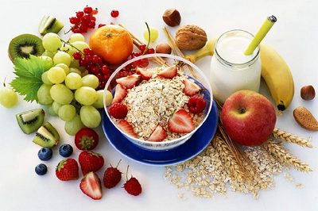
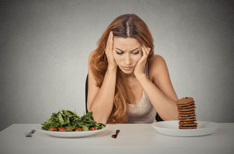

Що таке здорове харчування?
Чому ви повинні їсти здорову їжу?
Збільшення виробництва оброблених харчових продуктів, стрімка урбанізація та зміна способу життя призвели до зміни харчових звичок. Люди споживають більше продуктів з високим вмістом енергетиків, жиру, вільних цукрів та солі/натрію і не їдять достатньо фруктів, овочів та інших харчових волокон, таких як цільнозернові продукти. Проведені дослідження продовжують пов’язувати серйозні захворювання із поганою їжею. Наприклад, здорове харчування може значно знизити ваші шанси на розвиток серцевих захворювань та раку. Хороша їжа може покращити всі аспекти життя від роботи мозку до фізичної активності. Насправді всі ваші органи та клітини залежать від їжі. Якщо ви професійно займаєтеся спортом або просто любите займатися спортом, немає сумнівів, що здорове харчування допоможе вам краще тренуватись.
Здорове харчування – це важливо
Якщо продукт виглядає так, ніби він був виготовлений на фабриці, ймовірно, це не цілісна їжа. Здорова їжа багата на поживні речовини і має нижчу щільність енергії. Це означає, що вони містять менше калорій та більше поживних речовин на порцію, ніж оброблені продукти. Навпаки, багато оброблених харчових продуктів мають невелику харчову цінність і часто називаються «порожніми» калоріями. Прийом їх у великих кількостях пов’язаний із ожирінням та іншими захворюваннями.
Секрети правильного харчування.
-
Якщо ви займаєтеся розумовою роботою, білків має бути близько ста п’яти грамів на день, жирів – вісімдесят грамів на день, а вуглеводів – понад триста грамів на день.
-
Якщо ви зголодніли, у вас має бути шматочок шоколаду під рукою. Не вдайтеся до штучних стимуляторів, коли вам бракує енергії, навантажтеся фруктовими вітамінами.
-
Людям, чия робота пов’язана з фізичною працею, слід споживати сто двадцять грамів білків, вісімдесят п’ять грамів жирів та чотириста грамів вуглеводів.
-
Вуглеводи забезпечують наш організм енергією, але потрібно бути обережним і вибирати повільні вуглеводи – тобто білому хлібу віддати перевагу цільному зерну.
-
Якщо ви відчуваєте, що хочете з’їсти щось солодке, з’їжте невелику порцію натурального шоколаду. Це дасть вам достатньо енергії, не впливаючи на фігуру.
-
Не виключайте зі свого меню жири, а віддавайте перевагу тим, які корисні для здоров’я, уникайте тваринних жирів. Зосередьтеся на білку в курці та індичку. Без білка постраждають шкіра, волосся та нігті.
Правила здорового харчування
Основні правила здорового харчування дають вашому тілу поживні речовини, яких він потребує щодня, залишаючись при цьому в межах вашої щоденної мети за калоріями для схуднення. Ви можете використовувати тарілку для зразків здорового харчування, представлену Гарвардською школою охорони здоров’я імені Т. Х. Чана. Заповніть більшу частину своєї їжі овочами та фруктами – 1/2 вашої тарілки: Прагніть різноманітності і пам’ятайте, що картопля не рекомендується на тарілці для здорового харчування через його негативний вплив на рівень цукру в крові. Цільнозернові – ¼ вашої тарілки: Цільнозернові продукти — пшениця, ячмінь, лобода, овес, коричневий рис і продукти, приготовані з них, такі як цільнозернові макарони, — більш м’яко впливають на рівень цукру та інсуліну в крові, ніж білий хліб, білий рис та інші очищені зерна. Білок – ¼ вашої тарілки: Риба, птиця, боби та горіхи є корисними та універсальними джерелами білка. Їх можна змішувати із салатами та добре поєднувати з овочами. Обмежте вживання червоного м’яса та уникайте переробленого м’яса, такого як бекон та ковбаса. Корисні рослинні олії – в помірних кількостях: Вибирайте корисні рослинні олії, такі як оливкова, рапсова, соєва, кукурудзяна, соняшникова, арахісова та інші, і уникайте частково гідрогенізованих олій, що містять шкідливі транс жири. Пам’ятайте, що знежирений не означає здоровий. Пийте воду, каву або чай: Відмовтеся від солодких напоїв, обмежте вживання молока та молочних продуктів до однієї-двох порцій на день та обмежте споживання соку до однієї маленької склянки на день. Бути активним: Це не пов’язано зі здоровим харчуванням, але важливе для здоров’я. Це також важливо в контролі ваги та бажання схуднути. Основне посилання тарілки здорового харчування — зосередитися на якості їжі та життя.
Як правильно харчуватися за версією ВООЗ
Точний склад різноманітного, збалансованого та здорового харчування варіюватиметься залежно від індивідуальних характеристик, наприклад: віку, статі, способу життя, рівня фізичної активності, культурного контексту, місцевих продуктів та харчових звичок. Тим не менш, основні принципи вашого меню здорового харчування, за даними Всесвітньої організації охорони здоров’я, залишаються незмінними, і вони полягають у наступному:
Правильне здорове харчування для дорослих
Фрукти, овочі, бобові (наприклад, сочевиця та квасоля), горіхи та цілісні зерна (наприклад, необроблена кукурудза, просо, овес, пшениця та коричневий рис). Щонайменше 400 гр. фрукти та овочі на день, за винятком картоплі, солодкої картоплі, маніоки та інших крохмалів. Менш ніж 10% загального споживання цукру, що еквівалентно 50 гр. для людини зі здоровою масою тіла. Що споживає близько 2000 калорій на день, але в ідеалі менше ніж 5% від загального споживання цукру. Вільний цукор – це всі види цукру, які додаються в їжу або напої виробником, кухарем або споживачем, а також цукру, які природно присутній в меді, сиропах, фруктових соках і концентратах фруктових соків. Менше 30% загальної споживаної енергії посідає жири. Ненасичені жири (міститься в рибі, авокадо та горіхах, а також у соняшниковій, соєвій, та оливковій олії). Це краще, ніж насичені жири (міститься в жирному м’ясі, вершковому маслі, пальмовому та кокосовому маслах, вершках, сирі, теплом свинячому жирі). А також транс жири всіх видів, у тому числі транс жири промислового виробництва (міститься у випічці та смажених продуктах, а також у розфасованих закусках та таких продуктах, як заморожена піца, пироги, крекери, вафлі та олія). Транс жири жуйних тварин (міститься у м’ясних та молочних продуктах жуйних тварин, таких як корови, вівці, кози). Пропонується скоротити споживання насичених жирів до менш ніж 10% загального споживання, а транс-жирів – до менше 1% загального споживання. Зокрема, транс жири промислового виробництва не є частиною здорового харчування, і їх слід уникати. Менш 5 гр. солі (приблизно одна чайна ложка) на день. Сіль має бути йодованою.
Здорове харчування для дітей та немовлят
Протягом перших 2 років життя дитини оптимальне харчування сприяє здоровому зростанню та покращує когнітивний розвиток. Це також знижує ризик надмірної ваги або ожиріння та розвитку неінфекційних захворювань у пізнішому віці. Поради щодо здорового харчування для немовлят та дітей аналогічні до порад для дорослих, але також важливі наступні пункти:
-
Надзвичайно важливо, щоб немовлята перебували на грудному вигодовуванні протягом перших шести місяців життя.
-
Немовлята повинні перебувати на грудному вигодовуванні безперервно, поки їм не виповниться 2 роки та старше.
-
З 6-місячного віку до грудного молока слід додавати різні адекватні, безпечні та поживні речовини. У продукти для прикорму не можна додавати сіль та цукор.
Продукти та правила здорового харчування
Як правильно харчуватися та які продукти корисні?
Спробуйте скласти свій раціон на основі таких груп здорових продуктів:
-
Овочі: вони повинні відігравати важливу роль у більшості прийомів їжі. Вони низькокалорійні, але багаті важливими мікроелементами та клітковиною.
-
Фрукти: натуральні солодкі ласощі, фрукти містять мікроелементи та антиоксиданти, які можуть допомогти покращити здоров’я.
-
М’ясо та риба. М’ясо та риба були основними джерелами білка протягом усієї еволюції людини. Вони є основним продуктом харчування людини, хоча вегетаріанські та веганські дієти також стали популярними.
-
Горіхи та насіння: це одні з найкращих доступних джерел жиру, які містять важливі мікроелементи.
-
Яйця вважаються одним з найбільш здорових продуктів на планеті, містять потужну комбінацію білків, корисних жирів і мікроелементів, що робить їх надзвичайно важливими в режимі здорового харчування.
-
Молочні продукти, такі як свіже молоко та йогурт, є джерелами білка та кальцію.
-
Здорові крохмали. Для тих, хто не дотримується низько вуглеводної дієти, такі продукти, як картопля та цільнозерновий хліб, корисні та поживні.
-
Квасоля та бобові: це фантастичні джерела клітковини, білка та мікроелементів.
-
Напої: вода повинна становити більшу частину рідини, що споживається, поряд з такими напоями, як кава і чай.
-
Трави та спеції: вони часто багаті на поживні речовини та корисні рослинні сполуки.
Продукти, яких слід уникати більшу частину часу
Дотримуючись порад з цієї статті, ви природно скоротите споживання нездорової їжі. Немає потреби відмовлятися від їжі назавжди, але деякі продукти слід обмежити або залишити для особливих випадків. Вони включають:
-
Продукти на основі цукру: продукти з високим вмістом цукру, особливо солодкі напої, пов’язані з ожирінням та діабетом 2 типу.
-
Транс жири також відомі як частково гідрогенізовані жири, транс жири пов’язані з серйозними захворюваннями, такими як хвороби серця.
-
Рафіновані вуглеводи. Продукти з високим вмістом рафінованих вуглеводів, такі як білий хліб, пов’язані з переїданням, ожирінням та порушенням обміну речовин.
-
Оброблені продукти з низьким вмістом жиру: продукти з низьким вмістом жиру, які часто маскуються під здорову альтернативу, зазвичай містять багато цукру, щоб покращити їх смак.
Калорії та енергетичний баланс при схудненні.
Ключем до правильного здорового харчування є правильна кількість калорій, щоб збалансувати енергію, яку ви використовуєте. Тому що якщо ви споживаєте більше, ніж потрібно вашому тілу, ви набираєте вагу, тому що енергія, яку ви не використовуєте, відкладається у вигляді жиру. Якщо ви будете менше їсти та пити, ви схуднете. Хоча підрахунок калорій не завжди необхідний, загальне споживання калорій, як і раніше, відіграє ключову роль у контролі ваги та здоров’я. Якщо ви бажаєте схуднути, вам потрібно зробити деяку форму дефіциту калорій. Щоб схуднути, більшості людей необхідно зменшити кількість калорій, які вони одержують з їжі та пиття, та збільшити свою фізичну активність. Щоб схуднути приблизно на півкілограма на тиждень, добову норму слід скоротити на 500–750 калорій. Висновок : Плани харчування, що містять 1200-1500 калорій щодня, допоможуть більшості жінок схуднути. Плани харчування, що містять 1500-1800 калорій щодня, підходять для чоловіків і жінок з надмірною вагою або для тих хто регулярно займається спортом. Навпаки, якщо ви намагаєтеся набрати вагу і збільшити м’язову масу, вам потрібно їсти більше калорій, ніж ваше тіло спалює.
Приклад здорового меню для схуднення
Меню здорового сніданку:
Йогурт із фруктами Відмінний початок дня. Йогурт забезпечить вас необхідними білками та жирами, а фрукти стануть чудовим доповненням, що містить мінерали, вітаміни та фруктозу. Я можу розчарувати багатьох людей, але уникайте популярних йогуртів, а також інших видів фруктового молока, тому що в них дуже багато цукру. Залишаю вибір фруктів на ваш смак. Хороший вибір, наприклад, чорниця, яблуко, банан, персик. Бананові млинці Для млинців вам знадобиться рівно 3 інгредієнти – банан, 1-2 яйця і щіпка харчової соди в однорідній суміші. За бажанням, потім додайте домашній мед і насолоджуйтесь корисними млинцями. Яйця Яйця залишаються найбагатшою із відомих продуктів харчування. Вони містять абсолютно всі необхідні для організму речовини. При приготуванні їжі уникайте рослинних жирів, якщо вони не отримані холодним віджимом. Олія – найкращий вибір. Фруктовий коктейль Швидкий та легкий сніданок. Поєднання ківі, апельсина та яблука, наприклад, не лише дасть вам заряд, а й може зменшити ще один сантиметр. Експеримент! Вівсянка Дієтологи не рекомендують поєднувати кисломолочні продукти, такі як кисле молоко і свіже молоко з вівсом, так як це окислює шлунково-кишковий тракт і ускладнює його роботу. Набагато краще варити на воді. Це не всім до смаку, але ложка меду може зробити кашу смачнішою. Здорове меню на обід та вечерю: Зелений салат або мікс, ложка оливкової олії та нарізана шматочками куряча грудка. Цільнозернові макарони з тунцем. Смачно та легко. Вибирайте тунця лише у власному соусі. Додайте томатне пюре, бажано домашнього приготування, і приправте до смаку. Салат з нутом та огірками. Нут недооцінений і не дуже поширений на нашій кухні, але дуже корисний. У магазинах є готовий, лише промити. Морква, буряк та насіння соняшника з ложкою оливкової олії – теж чудовий салат. Уникайте солі, тому що вона затримує воду, якщо у вас повільний метаболізм. Тушковані овочі з курячою грудкою або рибним філе готуються швидко і просто. Загорніть рибу з невеликою кількістю олії, лимона та спецій у фольгу. У спекотні дні дуже актуальним є суп таратор з волоськими горіхами. Можна взяти з термосом до офісу. Супи теж дуже корисні, але без локшини. Овочевий суп займає мало часу та його легко приготувати. Деякі роблять його з картоплею, але вона є джерелом «швидких» вуглеводів, так що не перестарайтеся. Чому б не скуштувати із солодкою картоплею? Намагайтеся не вечеряти після 18-19 години. У пізніші години вироблення травних ферментів знижується, і шлунок піддається стресу. Кращі легкі вечері зі здоровим меню. У літній сезон у моді шашлики. Соковитий стейк та овочі на грилі звучать так добре. Ще одна пропозиція швидкої вечері – знежирений сир. Це джерело казеїну, білка, що повільно засвоюється, поглинання якого триває протягом декількох годин, навіть під час сну. Пийте більше води. Прагніть як мінімум 2 л, особливо в спекотні дні, і завжди можна додати жменю горіхів як швидке перекушування.
Макронутрієнти, яка їхня роль
Три макроелементи – це вуглеводи, жири та білки. Ці поживні речовини необхідні щодо великих кількостях. Вони забезпечують калорії та виконують різні функції у вашому тілі. Ось деякі загальні продукти у кожній групі макронутрієнтів:
-
Вуглеводи: 4 калорії на грам. Макаронні вироби, крохмалисті продукти та картопля. Він також включає фрукти, бобові, цукор та деякі молочні продукти.
-
Білок: 4 калорії на грам. Основні джерела білка включають м’ясо та рибу, молочні продукти, яйця, бобові та вегетаріанські альтернативи, такі як соя.
-
Жир: 9 калорій на грам. Основні джерела включають горіхи, насіння, оливкову олію, вершкове масло, сир, жирну рибу та жирне м’ясо.
Скільки кожного макронутрієнта ви повинні споживати для справжнього здоров’я, залежить від вашого способу життя та цілей, а також від ваших особистих уподобань.
Мікроелементи
Мікронутрієнти або мікроелементи – це важливі вітаміни та мінерали, які необхідні вам у різних дозах та надзвичайно важливі для якісного здорового харчування. Деякі з найбільш популярних мікроелементів, про які ви повинні знати, включають:
-
Магній: грає роль більш ніж 600 клітинних процесах, включаючи вироблення енергії, роботу нервової системи та м’язову активність.
-
Калій: цей мінерал важливий для контролю артеріального тиску, балансу рідини та функції ваших м’язів та нервів.
-
Залізо: в основному відоме тим, що воно переносить кисень у крові, залізо має багато інших переваг, включаючи поліпшення роботи імунної системи та мозку. Продукти, багаті на залізо, надзвичайно важливі для вашого здоров’я.
-
Кальцій: важливий структурний компонент кісток та зубів, а також ключовий мінерал для серця, м’язів та нервової системи.
-
Усі вітаміни: вітаміни, від вітаміну А до К, відіграють важливу роль у кожному органі та клітині вашого тіла.
Усі вітаміни та мінерали є «необхідними» поживними речовинами, тобто ви повинні отримувати їх зі свого раціону. Добова потреба кожного мікроелемента варіюється в різних людей. Якщо ви дотримуєтеся здорової дієти, що складається з фруктів, овочів, риби та м’яса, то ви повинні отримувати всі мікроелементи, необхідні людському організму, без прийому добавок.
Чому важливо, контролювати свої порції.
Споживання калорій є ключовим фактором у контролі ваги та хорошого здоров’я. Контролюючи свої порції, ви з більшою ймовірністю уникнете споживання занадто великої кількості калорій.
Хоча вживання здорової їжі не призведе до переїдання, ніж обробленої але її не слід вживати у великих кількостях. Якщо у вас надмірна вага або ви намагаєтеся схуднути, особливо важливо стежити за кількістю їжі, що з’їдається.
Існує безліч простих стратегій контролю розміру порцій. Наприклад, ви можете використовувати менші тарілки та, з’ївши їх вміст, почекати 20 хвилин, перш ніж повернутися за новою порцією. Після цих важливих 20 хвилин бажання їсти з великою ймовірністю пройде.
Такі продукти, як сир, горіхи та жирне м’ясо, корисні для здоров’я, але при їх вживанні обов’язково звертайте увагу на розмір порцій.
Міфи про здорове харчування
Є деякі лякаючі статистичні дані про набір ваги, які показують, що більшість людей відновлюють колишні кілограми, які вони втратили після того, як спробували дієту для схуднення. Як завжди, баланс є ключовим. Якщо у вас немає конкретної хвороби чи дієтичних потреб, немає необхідності постійно уникати так званої «нездорової» їжі. Цілком виключивши з раціону певні продукти, ви насправді зменшите своє прагнення до довгострокового успіху. Дотримання 90% свого раціону здорової їжі та вживання невеликих порцій дозволить вам час від часу насолоджуватися ласощами, але при цьому досягти відмінного здоров’я. Це набагато здоровіший підхід, ніж робити навпаки. Споживати 90% обробленої їжі і тільки 10% здорової їжі, як це роблять багато людей.
Харчові добавки і правильне харчування
Включення великої кількості багатих на поживні речовини продуктів у ваш раціон здорового харчування має допомогти вам задовольнити всі ваші щоденні потреби. Проте кілька добре вивчених добавок у деяких випадках виявилися корисними. Одним із прикладів є вітамін D, який природним чином одержують від сонця і таких продуктів, як жирна риба. Більшість людей мають низький рівень чи дефіцит цього вітаміну. Такі добавки, як цинк, магній та омега-3, можуть забезпечити додаткові переваги, якщо ви не отримуєте їх у достатній кількості. Інші добавки можуть бути використані для покращення спортивних результатів. Існує безліч досліджень, що підтверджують використання креатину, сироваткового протеїну та бета-аланіну. В ідеальному світі ваша здорова дієта була б повна поживних речовин і не потребувала б добавок. Однак це не завжди можна досягти в реальному світі. Тому здорове харчування і харчові добавки поєднують одне одного.
Поєднуйте правильне харчування з іншими здоровими звичками
Правильне харчування – не єдине, що має значення для оптимального здоров’я.
-
Дотримання здорової дієти та фізичних вправ може ще більше покращити загальний стан здоров’я.
-
Гарний сон має також вирішальне значення. Дослідження показують, що сон так само важливий, як і харчування, для контролю ризику захворювань та контролю ваги.
-
Гідратація та споживання води також важливі. Пийте, коли відчуваєте спрагу, і не допускайте зневоднення протягом дня.
-
Зрештою, постарайтеся звести до мінімуму стрес. Тривалий стрес пов’язаний із багатьма проблемами зі здоров’ям.
Висновок
Таким чином ми переконалися в тому що здорове харчування відіграє важливу роль в нашому житті. І нам вибирати. Чи йдемо ми по дорозі щасливого сповненого здоров’я та краси життя чи ми будемо хворіти і занепадати в своєму розвитку. Життя в нас одне. І вибір залишається лише за нами. А ви як гадаєте?